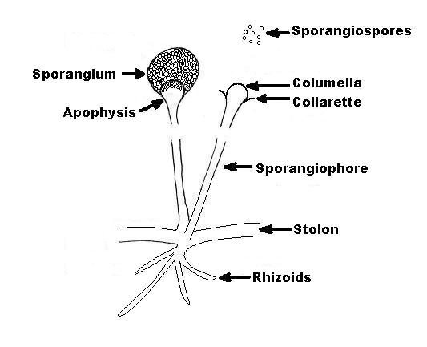

रोटी की फफूंदBlack Bread Mold
Rhizopus stolonifer · Rhizopodaceae · FNG-0018

- Scientific nameवैज्ञानिक नाम
- Rhizopus stolonifer (Ehrenb.) Vuill.
- Familyकुल
- Rhizopodaceae
- Hindiहिंदी
- रोटी की फफूंद
- Local namesस्थानीय नाम
- roti ki phaphund, phaphundi, fafund, kali fafund, bread mold
- Status hereयहाँ की स्थिति
- native
- Movementआवागमन
- Resident, here all year
- IUCNIUCN
- not evaluated
- Reviewसमीक्षा
- audited and independently read
When to look कब देखें
Present all year.साल भर मौजूद।
Uses and possibilities उपयोग और संभावनाएँ
Drawn from the documented uses in the profile below, where each is labelled traditional, current or a research lead. All uses →
Tell it apart from इनसे अलग पहचानें
रोटी की फफूंद / Black Bread Mold
Rhizopus stolonifer (Ehrenb.) Vuill. — Rhizopodaceae
रोटी की फफूंद — कुछ दिन पहले की रोटी या खरीदी गई पैक्ड रोटी जब गीली हो जाती है, तो सफ़ेद, फिर काली फफूंद लग जाती है। यह सबसे आम मोल्ड है जो घर में सब्ज़ियों और फलों पर भी लगता है। यह खतरनाक नहीं है (aflatoxin वाली फफूंद नहीं है), पर खाने लायक नहीं है। अगर रोटी पर फफूंद हो गई है, तो उसे फेंक दो। यह फफूंद सड़ी पत्तियों और कंपोस्ट में भी तेज़ी से बढ़ता है, और विघटन में मदद करता है।
Quick Identification त्वरित पहचान
| Feature | Description |
|---|---|
| Initial appearance | White, fine, cotton-like mycelium on bread or vegetable surface |
| Mature appearance | Black or dark grey sporangiophores (fruiting stalks) arising from white mycelium; looks like tiny black dots or tufts |
| Mycelial growth | Spreads rapidly; covers entire bread loaf within 3–5 days in warm, humid conditions |
| Sporangia (spore sacs) | Small, round, black or dark grey structures at the tip of fruiting stalks; 0.5–2 mm diameter |
| Smell | Characteristic earthy or slightly sweet mouldy smell; stronger after spore release |
| Texture | Fuzzy or cottony; easily rubbed off in early stages; firmer as sporulation occurs |
| Growth rate | Among the fastest fungi; visible growth within 24–48 hours on moist bread |
| Substrate | Prefers moist, high-carbohydrate substrates (bread, rice, potatoes); less common on protein-rich foods |
Field tip: Any homemade bread or purchased packaged bread left in humid conditions for 3–4 days will show this mold. The white mycelium first, then black spore-bearing structures. Throw it away — do not eat it. This is NOT the deadly aflatoxin mold (which is Aspergillus flavus, different fungus, rarer, and usually associated with peanuts and stored grains, not fresh bread).
हिंदी — कैसे पहचानें: रोटी पर पहले सफ़ेद, फिर काली फफूंद। तेज़ी से फैलती है। घर में कहीं भी दिख सकती है अगर नमी हो। खाने लायक नहीं।
Morphology आकारिकी
Fungal structures (visible to the naked eye; details under microscope):
| Structure | Description |
|---|---|
| Mycelium | Network of fine, branching hyphae; initially white or pale; fills porous substrate |
| Stolon | Horizontal hypha that connects different parts of the mycelium; helps the fungus spread efficiently across substrate |
| Rhizoids | Root-like structures that anchor the fungus into the substrate; increase nutrient absorption |
| Sporangiophore | Tall, unbranched stalk (0.5–5 mm) rising from the mycelium; terminates in a sporangium |
| Sporangium | Round or pear-shaped spore-containing sac; initially white, becomes dark brown to black as spores mature; 0.5–2 mm diameter |
| Sporangiospores | Hundreds of tiny, round, asexual spores contained within each sporangium; wind-dispersed when sporangium ruptures |
| Zygospore | Sexual spore formed by fusion of two compatible hyphae (rare in normal culture); thick-walled, dark, survives unfavorable conditions |
Growth pattern: Rhizopus stolonifer exhibits radial growth from a central point. On bread, it forms concentric rings of white mycelium followed by successive zones of black sporulation. Growth is extremely rapid — from inoculation to visible sporulation in 24–72 hours under optimal conditions.
हिंदी: बहुत सफ़ेद धागों जैसा होता है, फिर काली मटर जैसी फफूंद निकलती है। हर काली गोली में लाखों बीज हैं।
Life Cycle / Phenology जीवन चक्र
Rapid asexual reproduction (typical lifecycle, no sexual stage in India):
| Stage | Duration | Notes |
|---|---|---|
| Spore landing on moist surface | 0 (already present) | Spores are ubiquitous in air; settle on food when opportunity arises |
| Spore germination | 12–24 hours | Requires moisture (>80% RH) and food source; mycelial growth begins |
| Mycelial colonization | 24–48 hours | White, fuzzy growth spreads across the substrate, penetrating porous material |
| Sporophore initiation | 48–72 hours | Tall fruiting structures (sporangiophores) emerge from mycelium |
| Sporulation (spore formation) | 72–96 hours | Sporangia fill with dark spores; mature and release into air as the sporangium dries and ruptures |
| Spore release | Continuous once mature | Millions of spores released into air; spread by air currents, landing on nearby food or compost |
| Repeat cycle | 4–7 days total | If substrate remains moist, multiple generations occur within a week |
Zygospore (sexual stage): Under unfavourable conditions (low moisture, nutrient depletion), Rhizopus may produce zygospores by fusion of two compatible hyphae. Zygospores are thick-walled and can survive drying and cold for months. This stage is rare in kitchen environments but important for long-term survival in soil and compost.
Seasonality:
- Warm season (May–September): Fastest growth at 25–30°C; can infest bread within 2–3 days
- Cool season (November–February): Slower but still active at 10–15°C; takes 5–7 days to show symptoms
- Year-round activity: Never dormant; present in soil and air year-round
हिंदी: गर्मी में 2-3 दिन, सर्दी में 5-7 दिन में पूरी रोटी काली फफूंद से भर जाती है। अगर रोटी सूखी रहे तो यह नहीं आता।
Ecology and Substrate पारिस्थितिकी और आधार
Saprotrophic decomposer: Rhizopus stolonifer is an obligate saprotroph — it feeds exclusively on dead organic matter. It cannot parasitise living plant tissues (unlike powdery mildew or wheat rust).
Ecological role: One of nature's primary decomposers of moist organic waste. In compost heaps, forest litter, and stored food, Rhizopus is among the first colonizers. It rapidly breaks down complex carbohydrates and produces CO₂ and heat, accelerating decomposition.
Moisture requirement: Extremely hygrophilic (moisture-loving). Requires:
- High relative humidity (>85% RH) to initiate growth
- Free water or damp substrate to sustain growth
- Will not grow on dry bread, but thrives on moist bread
Temperature optimum:
- Optimal: 24–28°C
- Range: 5–35°C (slow at extremes)
- No dormancy; always metabolically active if moisture available
Substrate preference:
- Preferred: Carbohydrate-rich, moist substrates — bread, rice, potatoes, fruits, vegetables
- Also colonizes: Compost, soil, leather (in humid storage), textiles
- Less common on: Proteins (meats, cheese) or fats; requires different fungal communities
Ubiquity: Rhizopus stolonifer spores are among the most abundant fungal spores in the air. Nearly every moist food item will be colonized eventually if left exposed. It is a "universal colonizer" of moist organic matter in tropical and subtropical climates.
हिंदी: हर जगह की हवा में होता है, बस नमी और खाना चाहिए। पड़ा खाना, सड़ी पत्ती, कंपोस्ट — सब जगह यह तेज़ी से बढ़ता है।
Agricultural / Human Relevance कृषि प्रासंगिकता
Not a crop pathogen: Unlike wheat rust or rice blast, Rhizopus does not damage living crops in the field. It is a post-harvest problem.
Post-harvest significance:
- Stored grain and vegetables: Rhizopus rots stored potatoes, onions, and other vegetables if humidity is high. Management: good ventilation, cool storage, regular inspection.
- Compost acceleration: In compost heaps, Rhizopus is desirable — it rapidly breaks down organic matter, producing heat (reaches 50–60°C in active compost piles) and accelerating decomposition.
- Food spoilage: Bread, bakery products, and fruits are most susceptible.
Kitchen-level food safety:
What is this mold?
- Rhizopus stolonifer is a common, harmless bread mold.
- It is NOT Aspergillus flavus (the aflatoxin-producing mold) — that mold is rarer, typically infects peanuts and stored grains, not fresh bread.
- It is NOT toxic in the amounts you would accidentally eat from moldy bread.
What to do:
- If bread shows mold: throw it away. Do not scrape off the mold and eat the rest — the mycelium has penetrated deep into the bread.
- Prevention: store bread in a dry, cool place, or in the refrigerator. In summer, store in fridge if bread will not be consumed within 1–2 days.
- Compost: moldy bread can be added to compost piles; the mold helps decomposition.
Why bread goes moldy:
- Packaged bread is sometimes treated with preservatives to prevent mold growth during transport and storage.
- Homemade bread has no preservatives; it is more susceptible to mold if left in humid conditions.
- Bread with high moisture (fresh, soft bread) spoils faster than dry bread.
Common confusion: Many people fear that bread mold is "poisonous" or "toxic". While the mold is not appetizing and should not be eaten, the presence of Rhizopus on bread is not a health emergency. However, when mold appears, the bread should be discarded to avoid both the mold and any secondary bacterial growth that may accompany it.
हिंदी — खाने की सुरक्षा: यह फफूंद आम है, जहरीली नहीं है। पर खाई जा सकती है ऐसी नहीं है। अगर रोटी पर फफूंद आ गई, तो बस फेंक दो। अंदर की रोटी भी संक्रमित हो गई होगी, अगर ऊपर दिख रहा है।
Expected Locally स्थानीय रूप से अपेक्षित
Not a field record. Written from published accounts for eastern Uttar Pradesh. No confirmed local sighting yet — if you have seen it, that is what the atlas needs.
अभी तक स्थानीय पुष्टि नहीं। यह विवरण प्रकाशित स्रोतों से है, किसी अवलोकन से नहीं।
Rhizopus stolonifer is ubiquitous in Basti district and every other location in eastern UP. Every household with bread or stored vegetables will encounter this mold during the monsoon and post-monsoon months (June–October) when humidity is high. In homes without refrigeration, moldy bread is a predictable occurrence within 2–4 days of purchase or baking in summer. The mold is so common that it is part of everyday life and is simply discarded as spoilage. It is also active in compost heaps and vegetable storage areas year-round, accelerating decomposition.
Distribution वितरण
Global range: Cosmopolitan. Found on every continent wherever moist organic matter and sufficiently warm temperatures occur. One of the most widespread molds in the world.
In India: Present everywhere. Particularly abundant in tropical and subtropical regions with monsoon rainfall and high humidity.
In Uttar Pradesh: Found in every district, village, and household. Especially visible during monsoon and post-monsoon seasons.
In Basti district / eastern UP: Ubiquitous year-round. Peak visibility: May–October (warm season). Always present in compost piles and stored foods with high moisture.
Research Questions शोध प्रश्न
- How quickly does bread go moldy in your kitchen during monsoon vs. winter? — Buy a loaf; leave it sealed and dated; check daily for mold appearance.
- Does storing bread in the refrigerator prevent mold growth longer than room temperature? — Simple comparison: fridge vs. room temperature, same bread type.
- Can composting moldy bread with other organic matter accelerate decomposition? — Compare compost pile with moldy bread vs. without; measure heat generation and time to finished compost.
- Which vegetables spoil fastest to mold in summer storage — potatoes, onions, or tomatoes? — Store in standard conditions; count days to visible mold.
- Is there a traditional name for this mold in your village, and do elders know of any traditional use? — Ask 10 elders if they have any use for it (unlikely), or just discard it.
Similar Species मिलती-जुलती प्रजातियाँ
| Species | How to tell apart | हिंदी |
|---|---|---|
| Aspergillus species (aflatoxin-producing) | Smaller, green-grey or yellow sporulation; forms a powdery layer, not fuzzy white first; usually on stored grains and peanuts, not fresh bread; DANGEROUS | पीले-हरे रंग की; खतरनाक; मूँगफली पर |
| Mucor species (other bread mold) | Similar fuzzy white growth but white sporangia (not black); rare on bread | सफ़ेद रही फफूंद; दुर्लभ |
| Penicillium species (blue-green mold) | Blue-green sporulation; slower growth than Rhizopus; common on citrus fruits | नीले-हरे रंग की; ऊपर नीली चमक |
Field rule: Bread with white fuzz that turns black within days = Rhizopus stolonifer. It is the most common bread mold globally. Discard it.
Taxonomy & Classification वर्गीकरण
Original description. Rhizopus stolonifer was originally described by Christian Gottfried Ehrenberg in 1820. It was later formally described by Vuillemin in 1912. The species name stolonifer (from Latin stolon, a runner) refers to the horizontal hyphae (stolons) that characterize the genus.
Subspecies. Monotypic — no subspecies are recognized.
Family and order placement. Order Mucorales, family Rhizopodaceae. The genus Rhizopus contains approximately 10 species; R. stolonifer is the most economically important bread and vegetable mold.
Phylogenetic notes. Rhizopus belongs to the division Zygomycota, one of the "lower" fungal phyla. It is fast-growing, with relatively large hyphae and rapid asexual reproduction. Molecular studies confirm R. stolonifer as a distinct species from related Rhizopus species.
IUCN status rationale. Not evaluated. As a ubiquitous saprotroph with populations in the billions globally, it faces no conservation concern. Its abundance is well managed through food preservation and storage practices.
Photo Gallery फोटो गैलरी
Photos needed आवश्यक फोटो
- [ ] Bread loaf with white and black mold growth (सफ़ेद और काली फफूंद)
- [ ] Close-up showing white mycelium and black sporangiophores (महीन धागे और काली गोलियाँ)
- [ ] Moldy vegetable (आलू या प्याज़) in storage (भंडारण में सड़ी सब्ज़ी)
No photos yet — add field photos to media/species/black_bread_mold/ and run node scripts/sync_photos.js.
References संदर्भ
- Ehrenberg, C.G. (1820). De Fungis peculiaribus. In Symbolae Physicae, Animalia Evertebrata. Berlin. [original description]
- Vuillemin, P. (1912). Études sur la flore mycologique. Bull. Soc. Mycol. Fr. 28: 45–81. [formal description]
- Schipper, M.A.A. (1984). A revision of the genus Rhizopus I. The Rhizopus stolonifer-group and Rhizopus oryzae. Stud. Mycol. 25: 1–19. Centraalbureau voor Schimmelcultures, Baarn.
- Watanabe, T. (2010). Pictorial Atlas of Soil and Seed Fungi, 3rd ed. CRC Press, Boca Raton.
- Indian Council of Agricultural Research — National Bureau of Agriculturally Important Microorganisms (2018). Common Fungi of India. ICAR-NBAIM, Mau.
- GBIF Occurrence Data — Rhizopus stolonifer, India (2026).
Source file: species/fungi/molds/black_bread_mold.md